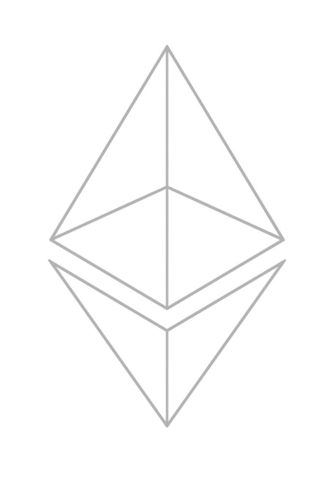
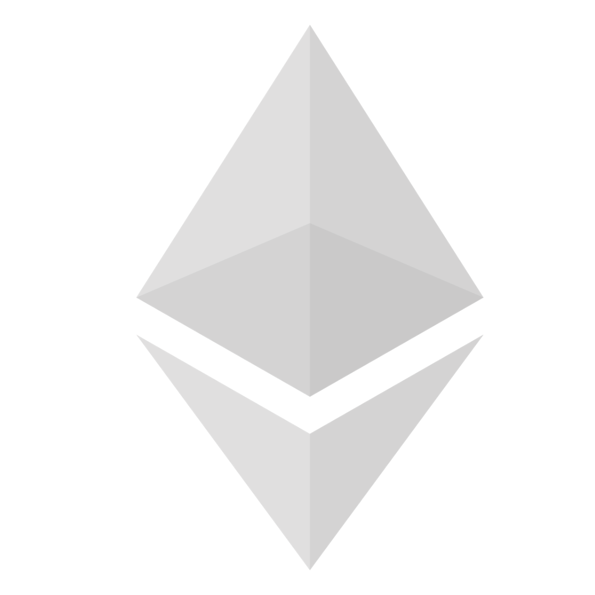

I N T R O D U C C I Ó N
Una criptomoneda, (del inglés cryptocurrency) es un medio digital de intercambio que utiliza criptografía fuerte para asegurar las transacciones, controlar la creación de unidades adicionales y verificar la transferencia de activos usando tecnologías de registro distribuido.
El control de cada moneda funciona a través de una base de datos descentralizada, usualmente una cadena de bloques (en inglés blockchain), que sirve como una base de datos de transacciones financieras pública.
TOP CRYPTO TYPES
1. BITCOIN ! La razón de la fama de esta moneda digital es que es la pionera, en 2008 fue creada por varias personas bajo el nombre de Satoshi Nakamoto.
2. RIPPLE (XRP) ! Sucesor del Bitcoin, se trata de un sistema totalmente seguro y encriptado cuya información de las transacciones son públicas pero la información del pago no.
3. LITECOIN ! Tiene un límite superior al Bitcoin y actualmente existen cerca de 55 millones de Litecoin en circulación.
4. ETHEREUM ! Es una de las criptodivisas más rentables y es una alternativa basadas en la tecnologías como Aragon o Stox.

COMPRA-VENTA
Si desea comerciar con criptomonedas como una inversión a largo plazo, deberá abrir una cuenta en un mercado de intercambio de criptomonedas. Después de crear la cuenta, podrá comprar en línea las unidades de criptomonedas que elijas, moverla a tu propio monedero de criptomonedas para su seguridad y en el caso de que decida venderlas, volver a ponerlas en el mercado.
Si cree que el trading de criptomonedas a través de CFDs es su opción preferida, puede abrir una cuenta con un proveedor de CFDs que ofrezca instrumentos de criptomonedas, como Plus500.

CARTERA DIGITAL
La Wallet tiene como propósito almacenar el importe obtenido mediante transacciones o minado de criptodivisas. Al comprar criptomonedas mediante un mercado de negociación, adquieres las criptodivisas.
Tendrás que crear una cuenta de mercado de negociación, aportar el valor total del activo para abrir una posición y almacenar los tokens de la criptomoneda en tu propia cartera hasta que estés listo para vender.
N O V E D A D E S
Se redactó un informe en el que se planteaba la posibilidad de que el Banco Central Europeo pudiese emitir en algún momento criptoeuros. Un informe que nombraba las ventajas que supondría la creación de esta criptomoneda. Teniendo en cuenta que actualmente la mayor parte del dinero que se emplea en Europa está digitalizado en forma de tarjeta de crédito, y con una sociedad acostumbrada al uso del dinero digital, la aparición de esta criptodivisa por parte del Banco Central Europea podría reducir los riesgos de insolvencia en las entidades y abaratar los costes de uso para los consumidores.
INFORMACIÓN
= El valor de una criptomoneda no está vinculado exclusivamente al comportamiento de una economía concreta.
= Los cambios en los tipos de interés y el aumento en las reservas monetarias solo tienen un efecto indirecto en su valor.
= El valor de las criptomonedas depende del compromiso de los usuarios por mantener su precio al convertirlas a divisas tradicionales.